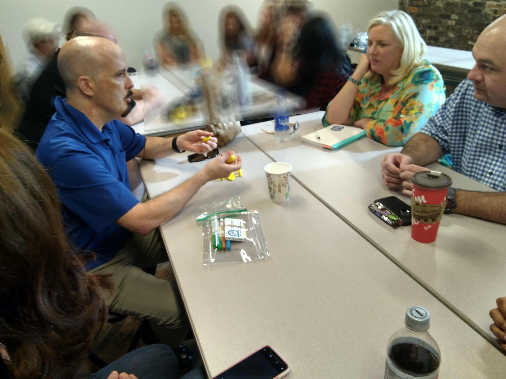
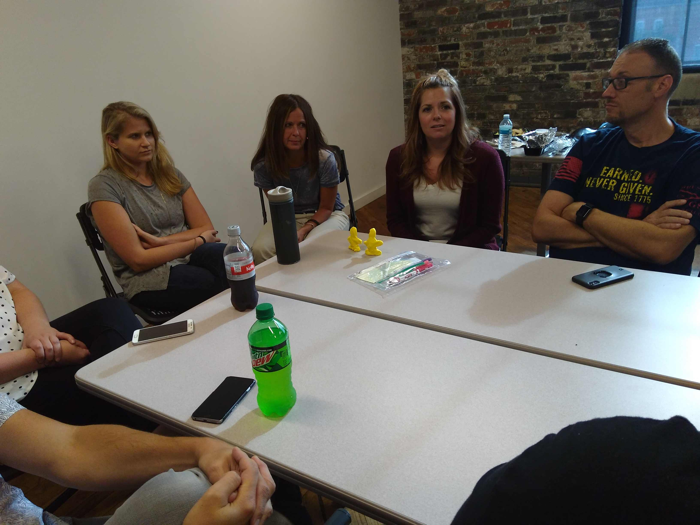

Scrum Master Interview Games@ReadySetAgile |
Applying the agile mindset, disruptive thinking, and fun, interactive, and informative activities to find awesome Scrum Masters |
 |
John Riley Principle Agile Coach and Trainer |
### Sponsors
---
### Share Your Experience
---
 @ReadySetAgile
@ReadySetAgile @ReadySetAgile
@ReadySetAgile https://www.facebook.com/ReadySetAgile/
https://www.facebook.com/ReadySetAgile/ https://www.linkedin.com/company/ready-set-agile/
https://www.linkedin.com/company/ready-set-agile/
### Interviews with Gaming
---
### Agile Interview Gaming
---
### Our candidate: Scrum Master
---

http://modernagile.org
### Your turn
---
### Room Setup for Scrum Master Interview Games
---
Each small group is a mock interview
| Scrum Master Candidate | Same person throughout whole session |
| Interviewers | 2 per game, rotate each game |
| Observers | Remaining group members, rotate each game |
### Strategies
---
In summary... https://answergarden.ch/733590


### Game 1 - Model Behavior
---
OBJECTIVE: Describe a past situation
MATERIALS: modeling clay
CAST: Candidate, 2 interviewers, others observers
| Activities | |
| Candidate / Interviewers | Construct a model of the situation and tell the story with interaction from interviewers. |
| Observers | Notice the interactions, body languages |
| Whole table | Retrospective |
Build Increment
https://answergarden.ch/733590Game Retrospective
https://answergarden.ch/733590
### Game 2 - What's Your Take?
---
OBJECTIVE: Candidate places cards containing quotes from a team space to indicate their position
- Immediate attention
- Obligation or some attention when needed
- No attention
MATERIALS: cards, post-it notes, pens
CAST: Candidate, 2 interviewers, others observers
| Activities | |
| Candidate |
|
| Interviewers | Interact with candidate asking appropriate questions |
| Observers | Watch the show |
| Whole table | Retrospective |
Card placement Increment
https://answergarden.ch/733590Game Retrospective
https://answergarden.ch/733590
### Final Outcome
---
### Services at www.ReadySetAgile.com
---

|  |
### Thank you!
---

john@ReadySetAgile.com - John Riley
@ReadySetAgile @ReadySetAgile https://www.facebook.com/ReadySetAgile/ https://www.linkedin.com/company/ready-set-agile/